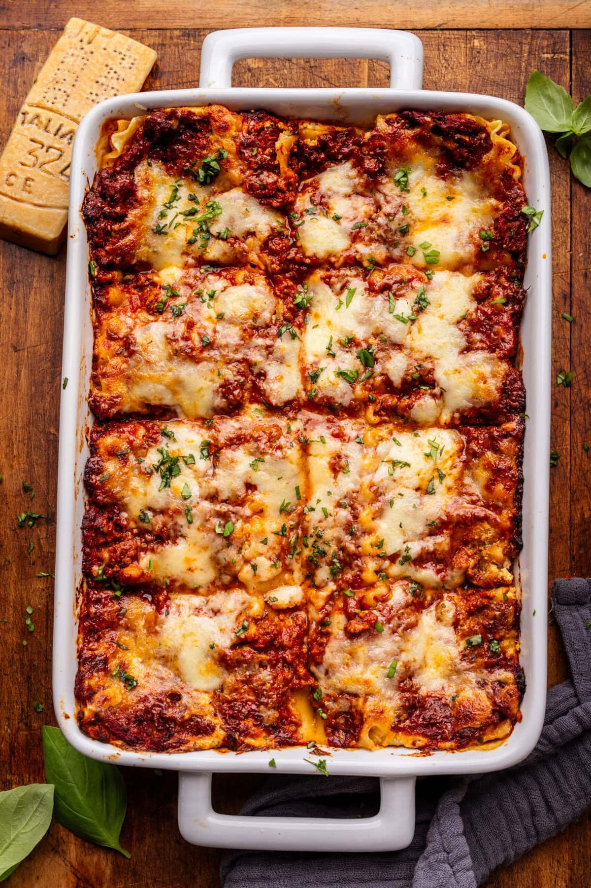

Lasagna
Return to Home

Description
This Lasagna Bolognese is one of the most incredible lasagnas I’ve ever made or eaten. Between layers of soft pasta noodles is creamy ricotta filling with fresh herbs, melty Italian cheeses, and a richly flavored bolognese ragu sauce. Everyone I serve this to agrees; it is truly the best of the best!
Ingredients
For the Lasagna
- 1 lb dry lasagne noodles
- 5 cups bolognese sauce
- 1 lb mozzerella, shredded
- 1 cup freshly grated Parmigiano Reggiano
For the Ricotta Mixture
- 1 1/4 cup ricotta cheese
- 1/4 cup fresh basil, finely chopped
- 2 teaspoons fresh oregano, finely chopped
- 1 egg
- 2/3 cup freshly grated Parmigiano Reggiano
- 3 garlic cloves, minced
- 1/4 teaspoon salt
- 1/4 teaspoon black pepper
- Preheat the oven to 375 F.
- Cook the lasagna noodles. Bring a large pot of water to a boil, salt it generously, and then add the pasta, stirring once you add them. Cook them until al dente, according to the package instructions. Drain once finished, and place them in a pan or dish filled with cold water.
- Make the ricotta filling. Add all the ricotta ingredients to a bowl and mix together completely.
- Layer the lasagna. Then, start to layer the lasagna in a 9x13 baking dish. First, spread a thin layer of bolognese sauce on the bottom (this prevents the noodles from sticking), then a layer of lasagna noodles (shake off or dry any excess water from them being in the water bath), a thin layer of ricotta spread across the noodles, more bolognese sauce, a generous sprinkle of mozzerella and Parmigiano Reggiano. Repeat the layers with lasagna noodles, ricotta, bolognese, mozzarella, and Parmigiano Reggiano until you reach the top. Typically lasagna has four layers, but this depends on the depth and size of your baking dish.
- Final layer. Once you reach the top of the lasagna, do a little bit more of a generous layer with the bolognese and cheese so it's completely covered. Lightly pat down any cheese that may be poking up so it doesn't get stuck on the foil when it bakes.
- Bake. Semi-tent the foil, cover the baking dish, and bake covered for 20 minutes and uncovered for 20 minutes. Then broil on high for 1 minute for a brown cheesy top. Slice into 8 pieces, then serve and enjoy!